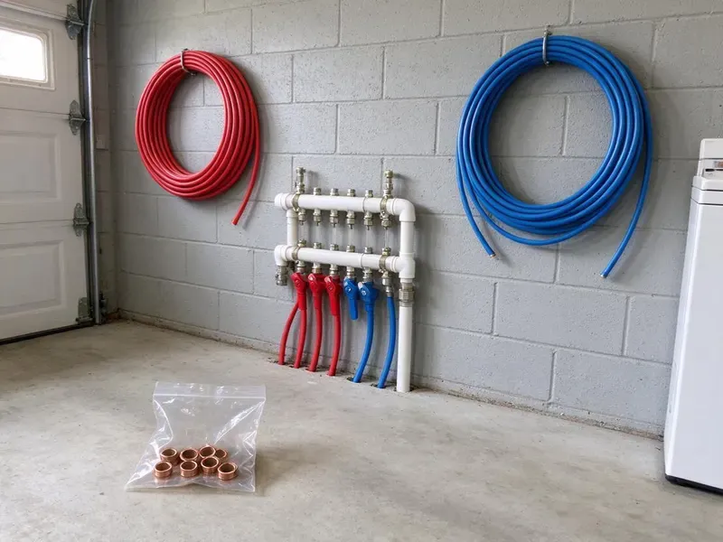

Water Heater Expansion Tank Installation in Troy, NY
Dripping relief valve or banging pipes in Troy, NY? A correctly sized expansion tank often fixes the problem in under two hours.
- Same-Day Installation Available
- Upfront Pricing
- Precharged to Your Pressure
- Licensed Plumbers
Stop Pressure Spikes From Wearing Out Your Water Heater in Troy, NY.
Call now and we will check your pressure, size the right tank and install it the same day most of the time.
Professional Thermal Expansion Tank Installation for Troy, NY Water Heaters
HCL Plumbing focuses on the proper installation of water heater expansion tanks, a critical component for protecting your home's plumbing system from excessive pressure caused by water heating. With changing water temperatures and municipal water pressure, these tanks are essential for preventing premature water heater failure and pipe damage.
Our expertise includes:
- Secure strapping and bracket support on the cold water line
- Making sure of compliance with all local plumbing codes.
- Precise expansion tank sizing and installation.

Additional Plumbing Installation Services in Troy, NY
We install water heaters, pumps, lines, and fixtures across Troy, NY with careful, permitted work that passes inspection the first time.


Customers
Why Choose HCL Plumbing for Water Heater Expansion Tank Installation in Troy, NY?
Installing a water heater expansion tank is not just about compliance, it is about protecting your entire plumbing system. Without one, thermal expansion can put serious stress on your pipes and water heater, leading to premature failure.
- Full System Check, We inspect the PRV and relief valve while we are there.
- System Protection, An expansion tank absorbs excess water pressure, relieving strain on your water heater and pipes.
- Properly Supported, Tanks are strapped or bracketed so their weight never hangs on the piping.
Citywide Coverage
Whether you are in an older district or a newer development of Troy, our experienced plumbers are ready to provide prompt and professional expansion tank installation. We are dedicated to protecting your home's plumbing no matter where you are in the city.
Experienced Team
Our plumbers install expansion tanks alongside water heater replacements every week. They know how to fit a tank into a tight closet or attic platform without straining the piping.
Safety-First Approach
Our careful approach means your expansion tank is installed correctly, preventing hazards and protecting your home's plumbing system from excessive pressure.
Trusted Certified Troy Plumbing Services Professionals
At HCL Plumbing, we take pride in providing licensed, certified plumbing services throughout Troy, NY. Backed by recognized industry credentials, our experienced plumbers combine technical skill with genuine customer care. Whether it is repair, installation, or maintenance, we follow strict safety and quality standards to deliver lasting results you can trust.
Call Us Now PHCC Plumbing Contractor Recognition
PHCC Plumbing Contractor Recognition Better Business Bureau (BBB) Accreditation
Better Business Bureau (BBB) Accreditation Angi Certified Pro
Angi Certified Pro ISO 9001 Quality Management Certification
ISO 9001 Quality Management CertificationReliable Water Heater Expansion Tank Installation Services in Troy, NY
Expansion Tank Installation Cost Comparison in Troy, NY
Adding an expansion tank during a water heater replacement is the most cost-effective approach because the water is already off and the piping is open. Installing one as a standalone job costs a bit more in labor but still pays off by protecting the heater. Larger tanks, attic installs and PRV replacement add to the total. We provide a clear price before any work begins.

Expansion Tank for Tankless Water Heaters in Troy, NY
While tankless water heaters do not store hot water, an expansion tank can still be beneficial, and sometimes required, in Troy, NY plumbing systems. If your tankless unit is part of a closed system, an expansion tank can help absorb pressure spikes from the cold water supply or cut down wear on components. Our plumbers assess your tankless setup and local codes to determine whether an expansion tank is necessary and recommend the right solution for your system's longevity and performance.
Preventative Expansion Tank Maintenance in Troy, NY
Beyond installation, regular checks and maintenance of your water heater expansion tank help it keep working properly. HCL Plumbing offers preventive maintenance in Troy, NY to inspect your expansion tank's air precharge, check for leaks and confirm proper mounting. This preventive approach helps identify potential issues before they lead to system failures, extending the life of both your tank and your water heater.
Residential Expansion Tank Installation in Troy
For homeowners in Troy, a properly installed water heater expansion tank is crucial, especially with so many closed plumbing systems. This device absorbs the increased volume of water when it heats, keeping excessive pressure from building up in your pipes and water heater. Our team ensures the tank is correctly sized for your water heater's capacity and your home's water pressure, maximizing its protective benefits. We handle all connections and secure the tank according to industry standards, giving you confidence.
Expansion Tank Replacement & Upgrades in Troy
If your existing expansion tank is old, leaking or no longer working correctly, HCL Plumbing offers expert replacement in Troy. We can also upgrade your current tank to a larger or more efficient model if your plumbing needs have changed. A failing expansion tank can cause the same pressure problems as having no tank at all. Our team will quickly diagnose the issue and install a new, high-quality tank, restoring protection to your water heating system.
Residential Expansion Tank Services in Troy
For homeowners in Troy, our residential expansion tank services focus on protecting your family's plumbing and hot water supply. We know that every home is different, and we tailor our installation to your water heater size, water pressure and household demand. This ensures your tank provides real protection against thermal expansion, a common issue that can lead to costly repairs if not addressed. We use durable tanks from respected brands for long-lasting performance.
Replacing Old Expansion Tanks in Troy
Expansion tanks do not last forever, and an old, waterlogged or corroded tank offers no protection. If your existing tank in Troy is showing signs of failure, such as a dripping relief valve or fluctuating water pressure, it is time for a new one. We expertly remove the old unit, dispose of it responsibly and install a new, correctly sized expansion tank. This proactive replacement prevents costly damage to your water heater and plumbing system and restores proper pressure control.

Brands and Quality Products in Troy, NY
HCL Plumbing uses only high-quality, durable expansion tanks from trusted manufacturers known for reliability. We work with proven brands like Watts, Amtrol and Z-Flex, so you receive a product built to last in your Troy, NY home. Our commitment to quality extends from the materials we use to the precision of our installation, giving you a long-lasting solution that effectively protects your plumbing system.
Water Heater Expansion Tank Installation Near Me in Troy, NY
If your relief valve is dripping and you are searching for expansion tank installation near me, give us a call first. We carry common tank sizes on every truck and can often install the same day. A quick pressure test tells us right away whether thermal expansion is the culprit.
When you search for 'water heater expansion tank installation near me' in Troy, NY, HCL Plumbing is your reliable local choice. Our team is positioned to respond quickly to your plumbing needs across the entire Troy area.
HCL Plumbing at a Glance
- Fully licensed plumbing team covering Troy, NY
- 24/7 emergency service with same-day scheduling
- Upfront, flat-rate pricing before work begins
- 4.8-star rated by 520+ New York customers
Troy Map
Troy Information
- Population
- 50,607
- Area codes
- 518/838/315
- Service area
- Troy and communities within 40 miles
- Nearby
- Albany, Schenectady, Saratoga Springs, Glens Falls
High incoming water pressure and common pressure regulators make thermal expansion a real issue for water heaters in Troy, NY, and a properly charged expansion tank keeps that pressure under control.
Expert Services
Trust our professionals for reliable HCL Plumbing solutions in Troy, NY.
Our Specialized Plumbing Services in Troy, NY
At HCL Plumbing, we provide a complete range of plumbing services across Troy, NY. From leak detection to full system installations, our team ensures fast, precise, and affordable service for both residential and commercial properties. Explore our core services below:


How Our Water Heater Expansion Tank Installation Process Works in Troy, NY
Installing an expansion tank is quick, but we follow a careful process to confirm it is sized and charged correctly.
Request a Quote
Call (716) 396-7101 and tell us about your water heater and any symptoms like a dripping relief valve. We will schedule a visit and give you an upfront price.
Test and Size
We measure your static pressure, check the PRV and relief valve, and choose the right tank size. The tank's air charge is adjusted to match your pressure.
Install and Verify
We install and support the tank on the cold supply, then run the heater through a cycle. Pressure is monitored to confirm the system stays steady.
Frequently Asked Questions About Water Heater Expansion Tank Installation in Troy
The cost for water heater expansion tank installation in Troy typically ranges from $250 to $500, including parts and labor. This can vary based on the tank size needed, accessibility and any additional plumbing changes required. We provide a transparent, upfront quote after assessing your needs.
Manufacturers typically offer one to five year warranties depending on the model. We also warranty our installation labor.
Yes, HCL Plumbing stands behind our work. We offer warranties on both the expansion tank itself, per the manufacturer's terms, and our installation labor. Specific warranty details will be provided during your consultation, so you can have confidence in our service.
A typical water heater expansion tank can last anywhere from 5 to 10 years. Homeowners around Troy with hard water often add a softener to protect water heaters and keep scale out of faucets. Water quality, system pressure and installation quality all affect its lifespan, and regular inspections can help identify when a replacement is needed.
Permit requirements for expansion tank installation can vary depending on local codes in Troy and whether it is part of a larger water heater replacement. Our team at HCL Plumbing knows local regulations and can advise you on any permits needed for your installation.
A waterlogged tank feels heavy and sounds solid when tapped near the top. Water coming out of the air valve when pressed is a sure sign the bladder has failed.
While it might seem like a straightforward task, installing a water heater expansion tank involves working with pressurized water lines and getting the sizing and code compliance right. It is best to hire a licensed plumber for a safe, correct installation that avoids leaks or damage to your system.
We install potable-rated tanks from Watts, Amtrol and A.O. Smith. Each is approved for drinking water and built with corrosion-resistant connections.
What People Are Saying About Our Plumbing Experts?

Daniel K.
A pipe burst at 11 pm and they actually answered. The plumber showed up within the hour, shut everything down, and had us back to normal the next morning. Could not ask for more.
Emergency Plumbing · Albany, NY
Sofia M.
Two new toilets installed in one visit, no mess left behind, and the tech even adjusted a faucet he noticed was dripping. Fair pricing and really friendly.
Toilet Installation · Saratoga Springs, NY
Robert G.
The trenchless sewer replacement saved our front yard. They walked us through the camera inspection footage first so we knew exactly what we were paying for.
Sewer Line Replacement · Albany, NY
Patricia H.
We had a slab leak that two other companies could not find. HCL Plumbing located it in under an hour, explained our options, and the price matched the quote to the dollar.
Slab Leak Repair · Schenectady, NY
Emily R.
I called HCL Plumbing for plumbing repair, and the technician was fast, polite, and thorough. They explained the problem clearly and fixed it the same day. I will definitely hire them again. Highly recommended!
Plumbing Repair · Albany, NY
Mark T.
When our office needed drain cleaning, HCL Plumbing provided quick, reliable service. The plumber arrived on time and made sure every drain flowed perfectly before leaving. Very satisfied.
Drain Cleaning · Albany, NY